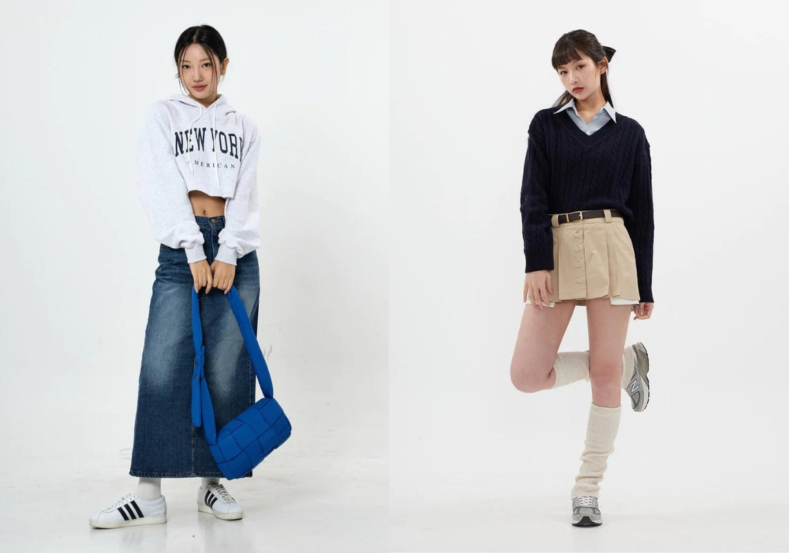

Phối đồ với chân váy – Đâu là cách phối phù hợp với bạn?
14/04/2023 THỜI TRANG, THỜI TRANG NỮ

Chân váy là trang phục mà bất kỳ cô gái nào cũng có trong tủ đồ của mình. Thế nhưng, làm thế nào để lựa chọn một chiếc váy hài hòa màu sắc, phù hợp với dáng người, tỉ lệ cơ thể bạn lại là điều mà không phải ai cũng làm được. Hãy cùng Shopee Blog khám phá ngay những kiểu phối đồ với chân váy hấp dẫn, tôn dáng ngay dưới đây!
Phối đồ với chân váy theo kiểu dáng
Áo phối chân váy dài
Một trong những dáng váy mang lại hiệu quả che khuyết điểm tốt nhất chính là chân váy dài. Chân váy giúp đùi, bắp chân của bạn trở nên thon gọn hơn nhiều. Thế nên, để phối đồ với chân váy dài, bạn có thể phối cùng với những chiếc áo có phần hơi rộng, freesize phía trên như áo sweater, áo hoodie nỉ để tăng thêm phần thoải mái cho trang phục.
Chân váy dài giúp bạn có bộ trang phục mang tính ứng dụng cao
Với dáng váy này, bạn có thể dễ dàng kết hợp với cả những chiếc áo có chiều dài ngang cạp quần hoặc trùm mông. Một đôi giày sneaker thể thao phối kết những tông màu trong bộ trang phục sẽ là lựa chọn phù hợp nhất. Về phụ kiện, vòng cổ màu sáng hoặc túi tối màu sẽ là những mảnh ghép thích hợp để hoàn thành trang phục.
Cách phối chân váy ngắn
Nếu như chân váy dài giúp bạn che đi những khuyết điểm thì chân váy ngắn lại là công cụ hoàn hảo để bạn tôn lên vẻ đẹp cơ thể, đặc biệt là eo và chiều cao. Vì vậy, để tránh làm mất đi hiệu quả tôn dáng, bạn nên phối cùng với những chiếc áo dáng ngắn, ôm vừa người. Chiều dài phù hợp nhất đối với những chiếc áo croptop là qua eo hoặc chạm cạp váy.
Chân váy ngắn mang lại cho bạn hiệu quả tôn dáng tốt
Bạn có thể lựa chọn một đôi giày boot da cổ cao với hiệu ứng da bóng loáng để tăng thêm hiệu quả tôn dáng và giúp bộ trang phục thêm phần cá tính hơn. Đối với trang phục này, kính mắt đen cùng túi kẹp nách tông hài hòa trang phục là sự lựa chọn không thể bỏ qua.
Phối đồ với chân váy chữ A
Dáng váy chữ A là một trong những kiểu dáng được nhiều người yêu thích nhất bởi là mẫu chân váy đẹp, mang hiệu quả làm thon gọn phần đùi. Với dáng váy này, chiều dài lý tưởng nhất mà bạn nên lựa chọn là dài đến nửa đùi. Bên cạnh đó, đối với áo, bạn nên thể lựa chọn đóng thùng cùng áo thun đơn giản hoặc áo cách điệu tay phồng để thêm phần dịu dàng cho trang phục.
Chân váy chữ A mang lại hiệu quả thon đùi tốt
Màu sắc hài hòa cũng chính là một trong những yếu tố để giúp bộ trang phục của bạn thêm bắt mắt hơn. Đối với giày, bạn có thể lựa chọn những đôi giày boot trắng cổ cao hoặc những đôi giày búp bê phối những màu dịu mắt. Về phụ kiện, túi kẹp nách và tất cổ cao sẽ giúp bộ trang phục của bạn thêm phần thu hút.
Áo phối chân váy xếp ly ngắn
Chân váy xếp ly ngắn là một trong những dáng váy gây sốt giới trẻ trong những năm gần đây đối với thời trang nữ. Bạn cần chọn những trang phục đồng nhất phong cách năng động, trẻ trung, có phần học đường của chân váy xếp ly ngắn. Dáng áo phù hợp nhất để phối cùng chân váy xếp ly là áo sơ mi croptop.
Chân váy xếp ly ngắn giúp bạn có bộ trang phục cực trẻ trung
Bạn có thể sử dụng chiếc áo sơ mi croptop như một chiếc áo chủ đạo để tạo nên một trang phục trẻ trung, đậm chất học sinh. Bên cạnh đó, để trang phục thêm phần vintage hơn, bạn có thể sử dụng chiếc áo sơ mi khoác ngoài cùng một chiếc áo croptop dáng ngắn bên trong. Cả hai cách phối đều phù hợp nhất với giày boot cổ cao, với màu sắc hài hòa cùng trang phục.